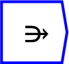

Next: Merge
Up: Tensor operations
Previous: gather
Contents

The operator can be placed on the canvas in two ways:
- From the Tensor Operations (``tensor'') toolbar
 ;
or
;
or
- By typing the letters ``meld'' on the canvas and then pressing the
Enter key.
The meld operation is used to insert additional values in an existing
axis of a Ravel. For example, if you had data from two different time
periods and you wished to merge them into one time dimension, you
would use Meld to combine them.